Staff astronomer at Brown University's Ladd Observatory, where she has been helping people look through the telescopes since 1972. More than fifty years of showing other people the night sky.
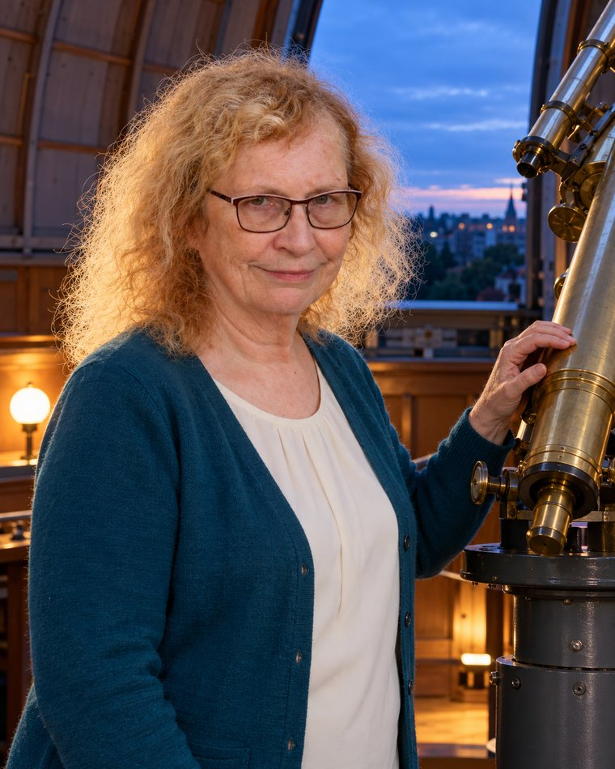
Francine Jackson started volunteering at Ladd Observatory in 1972, shortly after finishing her astronomy degree at the University of Illinois. She never really left. Today she is a staff astronomer there, guiding visitors through the public programs and answering their questions about the instruments and the exhibits.
She studied physics at the Community College of Rhode Island first, graduating in 1969, and she later earned a master's degree in adult education from the University of Rhode Island. The teaching degree fits the work: most of what she does is explaining the sky to people who have never looked through a telescope before.
When her fiftieth year at Ladd came around in 2022, the observatory marked it.
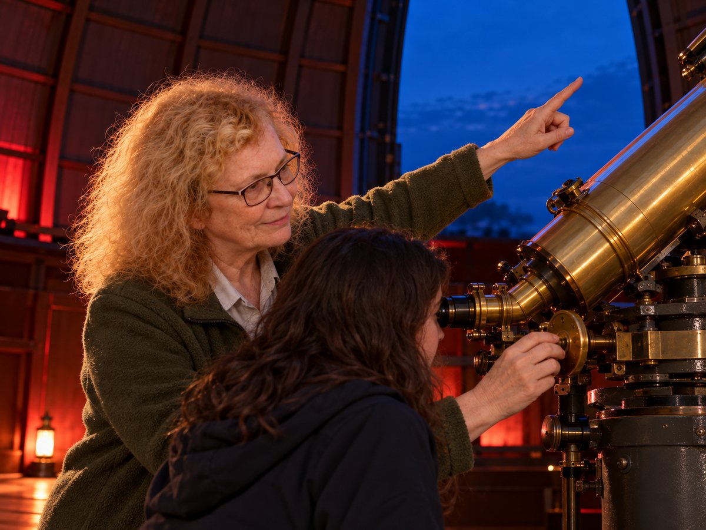
Ladd Observatory opened in 1891 and still runs public nights. On a clear evening, visitors who climb the hill in Providence have a good chance of meeting her at the top of the stairs.
Her job on those nights is simple to describe and hard to do well: get a stranger's eye to the eyepiece, make sure they actually see the thing, and answer whatever they ask next.
She has been teaching in planetariums since the middle 1970s, which means a good number of Rhode Islanders first heard how the solar system works in a room she was standing in.
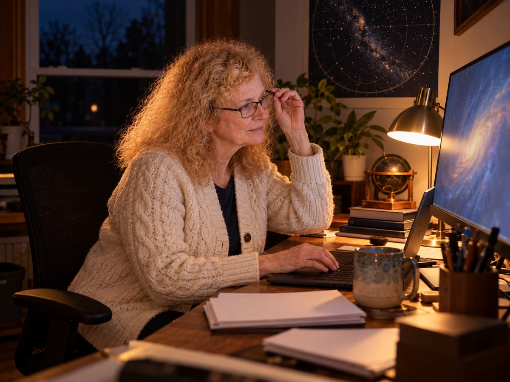
The through line is the same one that keeps her at the observatory: a place is worth looking after, whether it is a river valley or the sky above it.
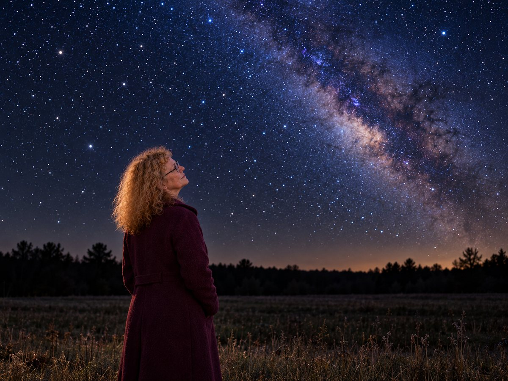
On 24 February 2025 the International Astronomical Union's Working Group for Small Body Nomenclature named minor planet 15022 Francinejackson, for her contributions to astronomy education and outreach.
The asteroid was discovered by the Belgian astronomer Eric Walter Elst on a plate taken at the European Southern Observatory's La Silla site in Chile on 20 September 1998. It sits in the main belt between Mars and Jupiter.
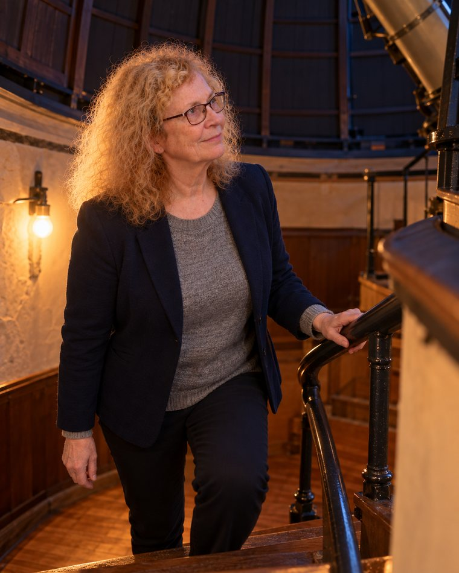
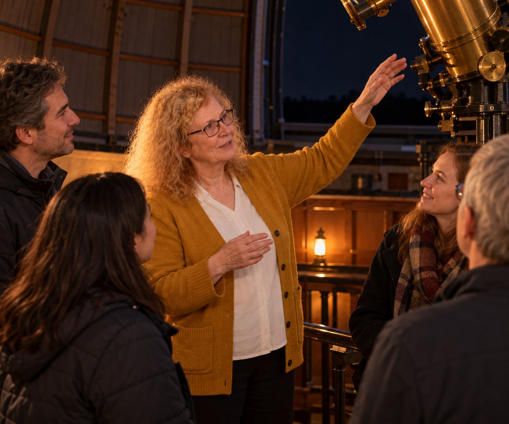
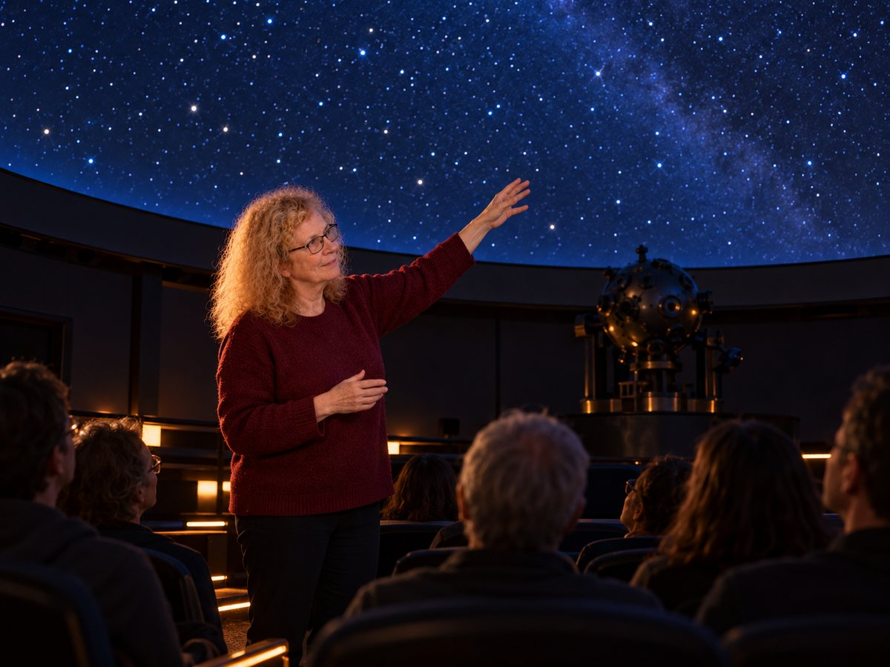
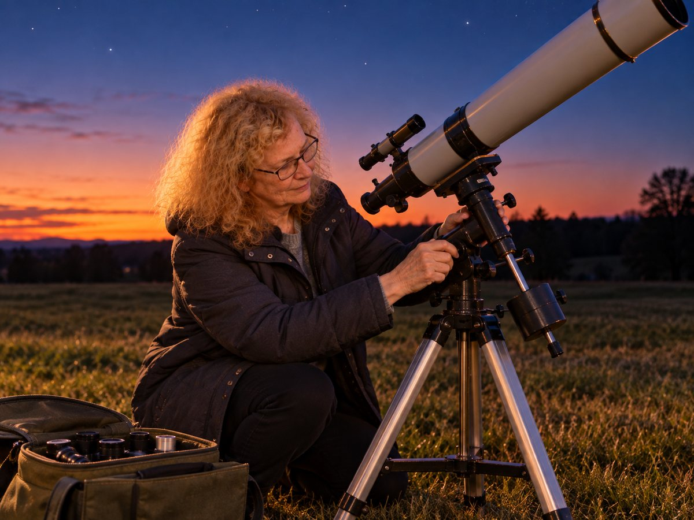
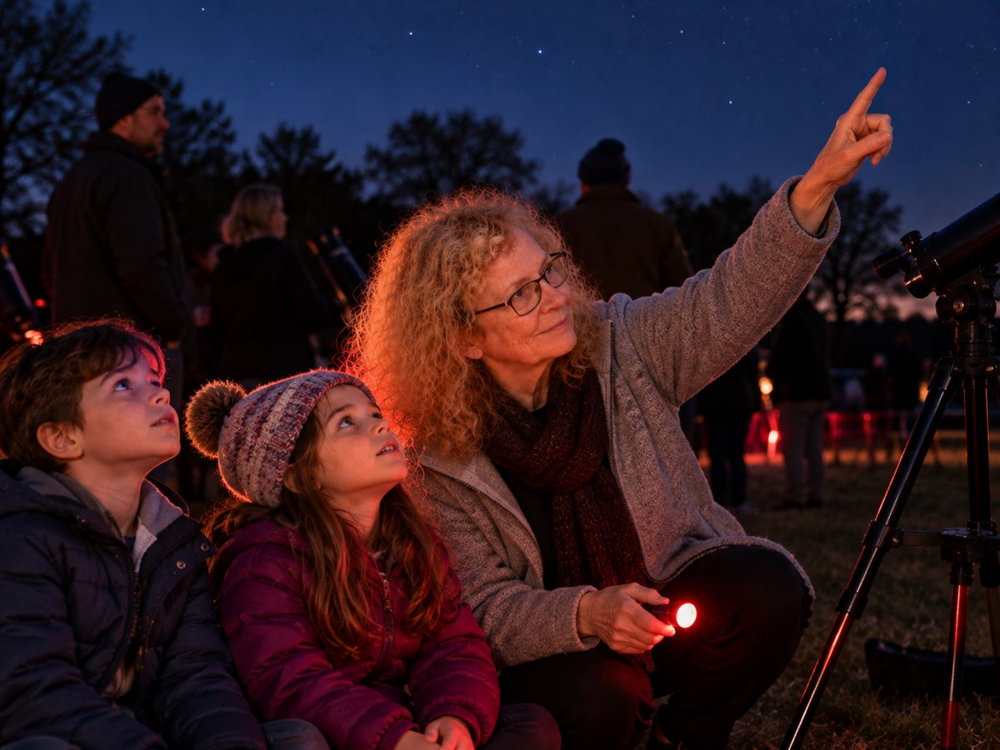
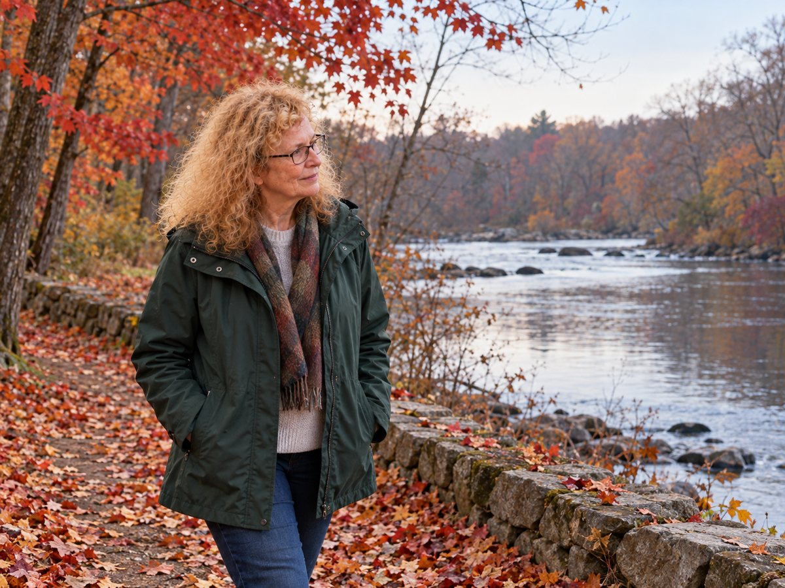
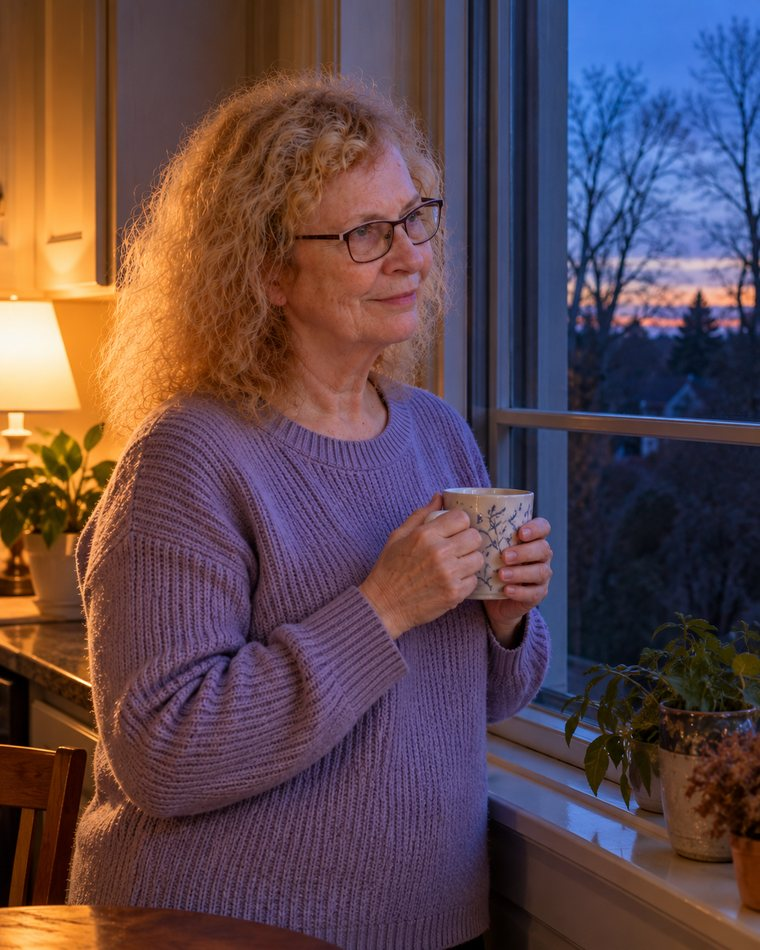
Every picture of Francine Jackson on this page is an AI-generated illustration, produced with her approval from a reference photograph. They are not photographs of real events.